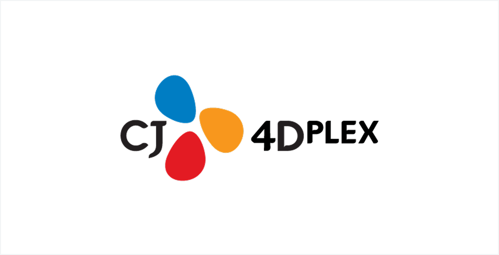

Q. CJ 4DPLEX에 대한 소개를 부탁드린다.
(방) CJ 4DPLEX는 2010년에 설립된 CJ CGV의 특별관 중심 사업자다. 처음에는 4DX 모션 체어를 접목한 특별관을 중심으로 사업을 시작했다. 2013년 SCREENX관을 국내에 처음 도입한 이후 2015년에는 첫 상업영화를 개봉했다. 그 이후에 코로나를 거치면서 여러 가지 산업의 변화가 있었지만 특별관 중심으로 글로벌 사업을 전개하게 되었고, 최근 들어서는 그 모멘텀을 가지고 다양한 몰입 기반의 제작 사업, 기술 사업, 콘텐츠 IP에 대한 사업 그리고 CG, VFX와 AI 기반 제작 사업까지 펼치고 있다. 말하자면 CJ 4DPLEX는 이머시브(Immersive)라 부르는 몰입감이라는 핵심 가치를 중심으로 관련된 모든 사업을 영위하는 사업자라고 생각해 주시면 될 것 같다.
Q. 해외에도 지사가 많은데 어떤 곳에서 어떤 사업을 하고 있는가?
(방) CJ 4DPLEX 전체 매출의 거의 80%가 해외에서 발생이 될 정도로 글로벌한 회사라고 할 수 있다. 현재 미국, 중국 그리고 일본에 공식 법인이 있고 그 외에 유럽, 남미에 연락사무소를 두고 있다. 국내에서는 모회사인 CGV에 4DX와 SCREENX를 제공하지만, 글로벌 시장에서는 특정 극장사에 국한되지 않고 전 세계 모든 사업자를 대상으로 기술을 제공하고 있다. 콘텐츠는 할리우드, 일본, 중국 등 다양한 로컬 스튜디오들과 협업해서 지속적으로 성과를 내고 있다.
Q. 최근에 대표적인 사업 성과가 있다면 소개를 부탁드린다.
(방) 가장 최근에는 이번 여름을 뜨겁게 달군 두 개의 콘텐츠 <오디세이>, <스파이더맨>이 대표적이라고 할 수 있을 것 같다. <오디세이>는 크리스토퍼 놀란 감독님께서 처음부터 IMAX 카메라를 가지고 촬영을 했는데, 초반부터 많은 관객들이 이왕이면 콘텐츠를 경험할 수 있는 상영관에서 볼 수 있도록 해야겠다 싶어서 IMAX를 선택했다. 이런 것처럼 <스파이더맨:브랜드 뉴 데이>도 SCREENX 전용으로 촬영하여 관객에게 SCREENX의 가치를 더욱더 잘 전달해줄 수 있었다. 4DX는 <오디세이>, <스파이더맨> 모두 상영하여 또다른 몰입경험을 선사하였다. 그렇다 보니까 국내뿐만 아니라 글로벌에서 많은 관객분들이 SCREENX와 4DX 중심으로 <스파이더맨>을 봐주셨다. 현재 CJ 4DPLEX가 세계 약 70여 개국에 약 1,300여 관을 보유하고 있는데, 한 달도 안 되는 시점에 여기에서 발생한 박스오피스가 1억 달러를 넘어섰다. 그래서 저희한테는 가장 최단 기간 안에, 단일 작품을 가지고, 1억 달러의 박스오피스를 저희 상영관으로만 창출해낸 사례다. 앞으로 처음부터 이렇게 특별관을 염두에 두고 사전 촬영 시점부터, 포스트 프로덕션 후반, 그리고 유통 전반에 걸쳐 감독님들과의 협업 체계를 늘리는 방식으로, 연출에서부터 마케팅까지 하나의 파이프라인으로 구축하는 사례들을 계속 만들어갈까 생각 중이다.
Q. 작년에 문체부의 ‘AI 혁신 선도 프로젝트’ 지원을 받아 AI-시각특수효과(VFX) 제작 통합 플랫폼을 구축한 것으로 알고 있다. 몰입형 영화관 사업을 하는 CJ 4DPLEX가 ‘AI 제작 기술’ 개발에 직접 뛰어들게 된 배경은 무엇인지 궁금하다.
(방) 저희는 AI뿐만이 아니라 자동화 기술을 제작 파이프라인에 접목시키는 고민을 굉장히 오랫동안 해왔다. 특히 SCREENX라는 플랫폼을 운영하면서 여러 가지 고민들이 많았다. 아무래도 짧은 시간 안에 모든 것을 촬영할 수는 없기 때문에 후반 작업을 통해 감독이 생각하고 있는 장면을 나타내기 위해 많은 노력을 하는 과정에서는 수많은 협업을 하고 많은 공력이 들어간다. 제일 중요한 것은 창작자의 비전과 연출 그리고 기획이지만 그것을 구현하는 것 또한 핵심적으로 필요한 단계이다 보니까 ‘이 공정 자체를 조금 더 효율화하고 자동화할 수 없을까’라는 고민을 계속해 왔었던 것 같다. 물론 제작비도 연계돼 있지만 저희한테 제작비보다 더 중요한 건 촬영 데이터와 원본들을 받아서 국내뿐만 아니라 저희가 현재 서비스하고 있는 80개국의 개봉일에 동시에 맞춰서 나가야 되기 때문에 시간을 맞추고 납기를 지키는 게 너무 중요했다.
그래서 자연스럽게 SCREENX를 하면서 포스트 프로덕션 공정을 효율화해 보기도 하고, AI도 접목해 보기도 했다. 다만 저희는 전 세계 여러 스튜디오들의 IP를 활용하다 보니까 보안이 지켜진 환경 내에서 자동화할 방법들을 고민해 봐야 했다. 그런 고민들이 쌓이고 쌓여서 나름의 노하우가 생기다 보니 이걸 플랫폼화해서 SCREENX 작업뿐만 아니라 4DX 나아가 본편의 CG와 VFX, 그리고 드라마, OTT, 광고의 공정에서도 통합되게 쓸 수 있는 기술이 있지 않을까라고 생각해서 ‘GEN.AI’ 플랫폼을 구축하게 됐다.
이런 CJ 4DPLEX의 고민과 문체부와 콘진원이 주관하는 ‘AI 혁신 선도 프로젝트’가 만나서 시너지가 잘 나서 실증 과제화까지 할 수 있었던 것 같다.
Q. 현장에서는 AI 제작 플랫폼이 제작 효율화의 대안이 될 수 있을까하는 고민이 있는 것 같다. 이번 ‘AI 혁신 선도 프로젝트’에서는 ‘GEN.AI’를 어떻게 제작에 활용했고, 또 어떤 측면에서 제작 효율화가 나타났다고 보는가.
(방) 이번 ‘AI 혁신 선도 프로젝트’에 참여하신 감독님들이 실제 촬영하신 IP들을 처음 단계부터 ‘GEN.AI’ 플랫폼을 가지고 어떻게 촬영 단계를 보다 밀도 있게, 그리고 시간적으로나 제작비적으로나 효율화된 환경 내에서 컨트롤할 수 있는지를 고안해서 만들었다. 제가 생각하기에 가장 효율적인 건 결국 ‘시간’인 것 같다. 기본적으로 ‘GEN.AI’ 플랫폼의 시초는 SCREENX다. 그래서 SCREENX 후반 공정 작업 효율화율은 거의 30%에서 50% 정도 나온다.
그리고 감독님들도 본편 작업을 연출하실 때, 보통 시간이 부족해서, 날씨가 안 돼서, 아니면 촬영 환경이 열악해서, 한 번 더 테이크를 하고 싶고, 한 번 더 촬영해 보고 싶지만 못하는 경우가 많다. 하지만 전체적인 공간을 AI 기반으로 컨트롤할 수 있다면 모든 게 대체될 수는 없더라도 시간도 아끼고, 그 확보된 시간을 가지고 감독님은 고민했었던 것들을 한 번 더 구현해볼 수 있는 유연성이 생긴다는 것이 가장 중요한 포인트인 것 같다. 결국은 시간이 확보되면은 비용을 아끼는 것도 있겠지만 연출자가 고민할 수 있는 시간이 길어질 수 있고, 궁극적으로 콘텐츠의 질과 최종의 퀄리티가 올라간다고 생각한다. 그리고 이 퀄리티가 결국은 시장에서 더 좋은 흥행 사례와 글로벌 유통 사례로 이어질 수 있다. 공정을 컨트롤하는 제작사나 포스트 프로덕션 입장에서는 시간에 대한 자율권이 생기고, 그로 인해서 제작비에 대한 효율도 간접적으로 발생하고, 그리고 결국 제일 중요한 것은 연출자가 고민할 수 있는 시간을 확보해서 본인이 상상하고 있는 비전을 콘텐츠로 최종적으로 구현할 수 있는 촉매(Catalyst)가 될 수 있다고 본다. 그런 의미에서 저는 GEN.AI 플랫폼이 중요하다고 생각한다.
Q. 후반작업에만 AI기술이 사용되는 것과 제작 전반에 사용되는 것은 매우 다른 의미를 가질 것 같다. ‘GEN.AI’ 플랫폼은 제작 공정에 어떤 방식으로 활용이 되는지 궁금하다.
(방) 시작 자체는 후반 공정에 대한 포커스가 많았다. 하지만 이걸 플랫폼화 해보고, 별도 서비스를 저희 공정 내에서 해보자고 시작한 이유는, 보통 풀스택(Full Stack)이라고 하는데, 프리 프로덕션에서부터 프로덕션, 포스트 프로덕션, 마스터링까지 전 단계를 데이터화하고, 그걸 하나의 파이프라인으로 이어지는 판이 없었기 때문이다. 이 판이 중요한 이유는 결국 AI 시대로 간다면 모든 과정이 데이터고, 이 데이터가 학습됨으로써 효율을 만들어내는 과정인데 우리가 사용하는 툴들은 프리 프로덕션이 따로 있고, 우리가 사용하는 툴들은 프리 프로덕션용이 따로 있고, 포스트 프로덕션용은 그보다 많으며, 저마다 다르다. 이걸 한 판에 올려놓고 하면 전체 과정과 공정이 효율화될 것이라는 가설에서 시작된 것이 ‘GEN.AI’ 플랫폼이다.
Q. AI 플랫폼을 통해 제작했을 때, 기존의 제작보다 감독님들이 크리에이티브 역량을 발휘할 여지가 더 있다고 보는가.
(방) 훨씬 많다고 생각한다. 크리에이션과 크리에이티브는 다른 것 같다. 크리에이티브, 즉 창의적 능력은 ‘사람’이나 ‘직관’과 같은 부분이 중요하다고 생각한다. 반면에 AI는 크리에이션, 즉 실질적인 제작 과정을 지원해 주는 툴이다. 그래서 결국은 AI로 기존의 방식과 다르게 구현할 수 있고, 더 빠르게, 더 좋게, 혹은 어려웠던 부분들을 가능케 하는 영역이라고 본다.
이번 ‘AI 혁신 선도 프로젝트’에 참여하신 감독님들은 한 분 한 분이 크리에이티브가 넘치시는 분들이다. 하지만 현실적인 제작 스케줄, 제작비와 같은 여러 가지 제약 환경들 때문에 구현해보고 싶었던 스토리를 진행하지 못하다가 이런 기술들로 디벨롭해 보자는 기회가 생겼던 것이다. 해보고 싶었던 부분들이 너무 많았었기 때문에 훨씬 더 열정적으로, 더 신나게 연출에 임하셨다. ‘GEN.AI’ 플랫폼으로 평소 생각하던 연출에 대한 다양한 시도가 가능했기 때문에 시너지가 더욱더 잘 나면서 표현의 영역도 더 넓어지지 않았나 생각한다.
Q. 이번 ‘AI 혁신 선도 프로젝트’를 진행하면서 CJ 4DPLEX가 가지고 있는 어떤 역량이 창작자들과 시너지를 낼 수 있었다고 생각하는가?
(방) 지금 CJ 4DPLEX라는 회사를 정의한다고 했을 때 여러 가지 키워드들이 있을 것 같다. 특별관, 글로벌, AI, CG/VFX 등 여러 가지 수식어들이 붙을 수 있는데 그 모든 것들을 관통하는 하나의 핵심 가치는 저는 ‘몰입감’이라고 생각한다. 그래서 CJ 4DPLEX는 몰입감을 제공하는 경험들을 만드는 회사라고 할 수 있다. 그래서 특히 스토리텔링 과정에서 몰입을 구현하는 데 가장 큰 고민을 했었던 것 같다. 그래서 AI가 도입되었을 때 가능성도 많다고 생각하면서도 또 두려운 것도 사실이다. 그런데 4DPLEX가 AI를 공정에 가지고 올 때는 내가 생각하고 있는 스토리텔링 과정을 보다 몰입감 있게 구현하는 것에 대한 고민이 컸다. 그래서 결국 사람들 간의 신뢰 형성이 어떻게 보면 가장 중요했었던 것 같다.
저희는 제작뿐만 아니라 어찌 됐든 실질적으로 관객이 최종적으로 그 중요한 콘텐츠를 만나는 접점 포인트인 극장을 갖고 있다. 이 극장 하드웨어 구조에서부터 설계까지 직접 투자하고 감독님들, 창작자들, 제작자들의 스토리 제작 과정에서 후반 과정뿐만 아니라 관객에 이르는 최종 단계까지도 고민하는 회사다 보니까 거기에서 생성된 신뢰감과 상호 시너지와 같은 요소들이 이번 프로젝트를 성공적으로 나가게 하는 원동력이 되지 않았나 생각한다.
Q. 이번에 4DPLEX가 만든 AI 제작 플랫폼이 중소 제작사들에게도 새로운 기회를 열어줄 수 있다고 보는가.
(방) 물론이다. 지금 국내 콘텐츠 시장, 영화 시장, 드라마 시장이 어려운 데는 대내외적으로 다양한 이유들이 있다. 저는 결국 가장 중요한 건 콘텐츠의 질과 양이 둘 다 올라가야 시장에 활기가 돌고, 돈이 다시 흐를 것이라고 생각한다. 그래서 극장에 근본을 두고 있는 사업자로서 저희한테는 콘텐츠가 다양하고 일단 많아야 한다. 텐트폴도 있겠지만, 드라마일 수도 있고, 오리지널 IP도 있고, 프랜차이즈 IP도 있고. 그 안에서는 제작비의 큼과 적음, 텐트폴과 비텐트폴의 차이는 크게 없다고 생각한다. 물론 이코노믹스의 차이는 있을 수 있겠지만. 하지만 결국은 변하지 않는 사실은 관객들은 좋은 스토리를 내면 꼭 보러 올 것이라는 사실이다.
그런 입장에서 CJ 4DPLEX가 생각하고 있는 AI 플랫폼은 결국은 모두에게 제작의 유연성과 효율화를 제공할 수 있어야 하는 방향성으로 가야 된다고 본다. 다만 시장의 판을 키워야 하는 것은 필요하다. 다양성을 제공하는 일환으로 ‘GEN.AI’ 플랫폼을 활용해서 특별관 버전을 만들든, 아니면 본편을 보다 빠르게, 더 효율적으로 만들 수 있는 계기가 된다면 저는 얼마든지 제공할 수 있는 영역이라고 생각하고 있다. 그리고 국내뿐만 아니라 해외에서도 결국은 의외의 서프라이즈들은 항상 있다. 올해 상반기에 할리우드 배급 작품 중에서 <옵세션>이라는 작품이 있다. 제가 알기로는 제작비가 10억 언저리일 것이다. 국내 예산 치고도 상당히 적은 비용이다. 그런데 전 세계 5억 달러, 우리나라로 따지면 한 7천억 원 이상의 매출을 발생시켰다. 이 영화 스토리텔링의 가능성을 알아본 한 배급사가 글로벌 유통을 했는데, 말하자면 밸류체인을 열어준 것이다. 저희도 텐트폴이 아니더라도 그런 작품들이 나올 수 있도록 계속 기회를 제공해야 한다고 생각한다.
Q. CJ 4DPLEX가 콘텐츠를 제작할 때 어떻게 협업하는지 궁금하다.
(방) 케이스가 너무 다양하다. 할리우드 같은 경우에는 보통 메이저 스튜디오들과 라인업 딜이 되어 있어서 초반에 콘텐츠를 미리 좀 라인업을 해놓고, 촬영 단계에서 만들어진 소스들을 다 모아서 감독님과 저희 제작팀이 상의를 해서 같이 구현해서 만드는 경우가 있다. 반면에 촬영 단계부터 같이 기획해서 가는 케이스도 있다. 얼마 전에 개봉한 <스파이더맨>처럼 아예 같이 촬영을 한 케이스다. 국내도 마찬가지다.
그런데 IMAX, SCREENX, 4DX, 돌비와 같이 몰입감을 기반으로 한 특별 상영관들의 인기와 비중이 올라가면서 트렌드로 자리잡고 있다. 그리고 이 특별관들의 개별적인 장점이 있다. 그걸 살린 콘텐츠를 처음 촬영 이전부터 고민해 보자라는 트렌드가 많이 확산되고 있다고 생각한다. 그래서 기본적으로 한국, 미국, 일본, 중국 등 다양한 시장에서 최적의 콘텐츠 라인업을 미리 세팅해놓고, 그 안에서 우리가 집중적으로 봐야 되는 콘텐츠가 뭐가 있는지, 여기에는 조금 더 딥(deep)하게 협업을 하면 좋겠다는 방식으로 파트너사들과 협의해서 미리 선정을 해놓은 상황이다.
Q. CJ 4DPLEX가 가진 가장 큰 장점은 글로벌에서의 역량을 탄탄하게 갖추고 있다는 점이라고 생각한다. 기존의 몰입형 사업과 AI 플랫폼 ‘GEN.AI’를 연계할 계획이 있는가.
(방) 물론 연계할 계획이 있다. 기본적으로 저희가 서비스하는 상영관들은 거의 대부분 해외에 있기 때문에 기본적으로 모든 제작 플랫폼의 첫 사용자가 항상 글로벌 플레이어들이었다. 그래서 이 플랫폼 자체가 서비스 된다의 정의는 조금 더 고민을 해봐야 될 것 같기는 하다. 결국은 저희 내부 네트워크 작업에 활용할 것이냐, B2B 플레이어들한테도 제공될 것이냐, B2C까지 갈 것이냐 등과 같이 어느 시장까지 갈 것이냐에 대해서는 조금 더 논의와 고민이 필요할 것 같다. 다만 당연히 숙명적으로 저희는 전 세계 최고의 이머시브 플레이어가 되겠다는 비전을 갖고 있다. 그렇다면 어떤 방식으로든 해외 서비스는 병행되지 않을까라고 생각한다.
Q. 이번 정부의 ‘AI 혁신 선도 프로젝트’ 지원을 통해 민간의 기술 개발과 공공 정책이 만났다. 프로젝트를 진행하면서 어떤 점이 좋았고, 어떤 부분이 CJ 4DPLEX의 동력이 되었다고 보는가.
(방) 좋았던 점이 너무나도 많았다. 무엇보다 과정 자체가 굉장히 건설적이었던 것 같다. 일단은 AI라는 기술 분야는 이미 글로벌에서 선도하는 기업들이 많고, 정책적으로도 미국이나 중국이 훨씬 앞서 가 있는 게 사실이다. 그리고 이걸 따라잡을 수 있을까에 대한 막연한 두려움과 질문도 있겠지만 결국은 우리가 할 수 있는 영역을 발굴하고 거기에서 우리의 니치하지만 파워풀한, 어떻게 보면 버티컬 영역에서 가치를 만들어 보자는 가설에서 이 과제가 시작된 것 같다.
(방) 그래서 저희의 몰입감 기술 기반의 제작 AI 플랫폼과 국내에 있는 많은 IP사들과 창작자들을 연결시켜주면서 좀 더 큰 그림을 그려보자라는 정부의 의지가 맞았었던 것 같다. 그 과정에서 ‘AI 혁신 선도 프로젝트’도 어떻게 보면 계속 진화했었던 것 같다. 처음 시작할 때는 IP를 낼지, 플랫폼에 대한 사례를 만들지 등 여러 논의로 시작했지만. 최종 이 과제를 발표를 할 때는 창의적 역량을 가진 감독님들이 실제로 이러한 기술이 스토리텔링하는 데 얼마나 필요하다고 우리나라가 잘할 수 있다는 메시지를 전달하는 과정 자체가 어떻게 보면 상징적이지 않았나 생각한다. 과제가 계속 디벨롭되었기 때문에 가능한 것이었다고 본다.
얼마 전에 CJ 4DPLEX가 국민성장펀드로 투자유치를 받게 된 것도 결국은 이 제작 사이클 자체가 한국에 있는 제작 생태계를 활성화하는 데 도움이 되지 않을까라는 부분에 공감하고 높게 평가해 준 것 같다. 결국 그 시작 포인트가 문체부, 콘진원과 했었던 ‘AI 혁신 선도 프로젝트’였다고 생각한다.
Q. 앞으로 더 많은 콘텐츠가 이러한 기술 인프라의 혜택을 누리기 위해, 정부의 정책 지원이 어떤 방향으로 확장되어야 한다고 보는가?
(방) 우수한 IP가 많이 유통되도록 정책적인 지원이 필요하다. 아직까지 변하지 않은 팩트는 IP가 더 많아져야 한다는 것이다. 하지만 IP가 많아진다는 건 굉장히 어려운 얘기다. 민간 섹터에서도 투자를 더 많이 해야 되고, 그 투자를 더 용이하게 하기 위해 관에서는 정책적인 변화도 있어야 될 수도 있고, 기술에 대한 발전도 필요하다. 그럼에도 불구하고 IP가 많아져야 되는 이유를 영화를 사례로 말씀드리고 싶다. 코로나 이전인 2019년이 한국 영화계의 황금기였다가 코로나로 어려워졌다. 이후 2025년 기준으로 전 세계 회복률이 약 80%까지 올라갔지만 우리나라는 50%도 안 된다. 그 와중에 일본은 코로나 시기 때보다 오히려 매출이 늘었고, 미국도 거의 100% 수준까지 갈 것이라고 보고 있다. 가장 큰 차이는 콘텐츠의 수, 유통되는 수가 미국이나 일본은 모두 회복이 됐다는 것이다. 그에 비해서 우리나라는 콘텐츠 수는 반토막이 났다. 여러 가지 이유가 있겠지만 시장이 아직까지 회복이 좀 더디다고 생각한다. 그럼 더 많은 IP들이 필요하다. 이미 좋은 내러티브를 발굴하는 것에 대한 공감대는 형성되어 있다고 본다. 반면에 ‘빠르게 잘 만들 수 있다’, ‘제작과 크리에이티브가 뛰어나다’라는 우리나라만의 장점을 살리면서 해외에 있는 IP들을 국내에서 작업할 수 있는 하나의 콘텐츠 허브로 만드는 것도 필요하다고 본다. 이 부분에서 정책적인 지원이 많이 필요하다.
(방) 유럽이나 특히 영국 같은 경우에는 다른 나라의 IP라고 할지라도 자국에서 예를 들면은 CG/VFX 작업을 하면 세액 공제나 리베이트를 적어도 25%에서 많게는 50% 이상으로 해주고 있다. 이런 작업물들이 우리의 영토에서 이루어질 수 있게 해야 결국 기간산업들과 인접돼 있는 사업들이 살아나지 않을까, 그리고 더 많은 IP들이 발굴되지 않을까라는 생각을 하는 것 같다. 그런 부분들을 좀 더 적극적으로 정책화해서 더 많은 IP들이 국내에서 제작될 수 있는 인센티브를 제공하는 것도 중요하다고 생각한다.
마지막으로 말씀드리면, 결국 콘텐츠를 만들어 가는 데 필연적으로 거쳐야 되는 공정이 CG/VFX다. 그래서 ‘이 시장을 어떻게 다시 키울 것이냐’에 대한 고민을 많이 하는 편이다. AI가 수작업으로 하는 CG/VFX의 시장을 소멸시킬 것이라고 생각하는 관점도 있겠지만, 저는 서로 보완할 것이라고 생각한다. 그래서 CG/VFX 시장에 어떻게 AI를 같이 넣고, 이 포스트 프로덕션의 영역을 프리 프로덕션과 프로덕션과 같이 키울 것이냐, 이런 고민들을 많이 하게 되는 것 같다. 그래서 그 영역에 어떻게 활기를 다시 불어넣어 되살릴 것이냐라는 부분들은 민간 업체와 정부에서 같이 고민해 보고 토의해 보면 좋을 것 같다.